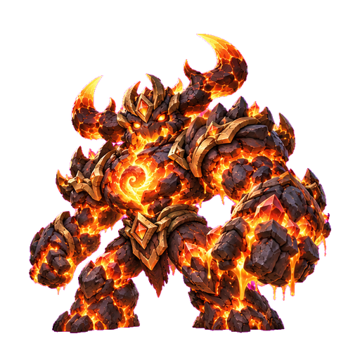
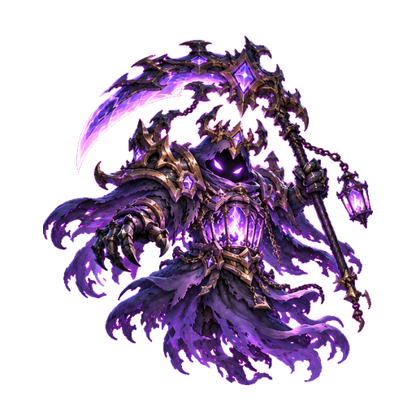
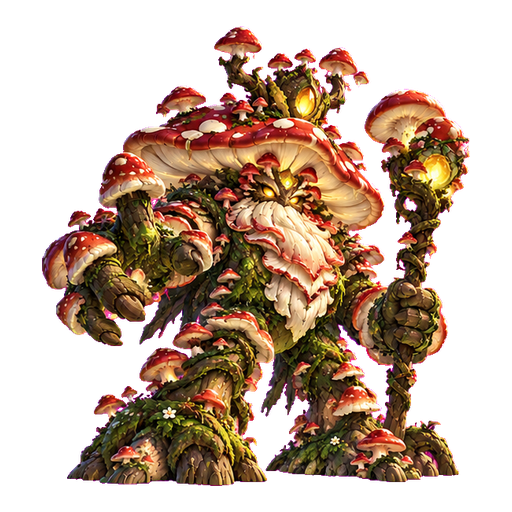
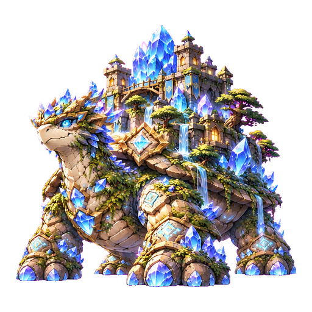
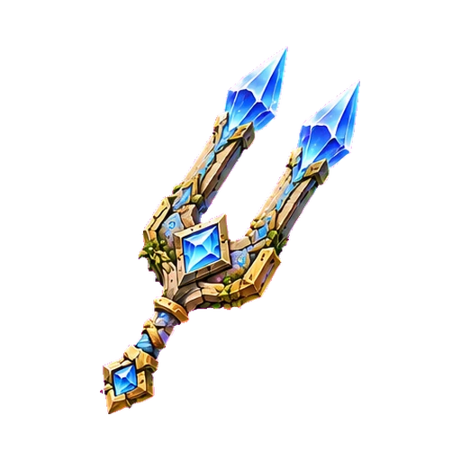

Vòng khám phá và phần thưởng
Mỗi chương 50 ải: 10/20/30/40 là tinh anh, 50 là boss. Những ải còn lại dùng ba loài quái của chủ đề. Mỗi tinh anh có dấu hiệu của cơ chế boss để người chơi học trước. Ba sao tinh anh: thắng, còn ít nhất 50% HP và kết thúc trong 16 lượt. Boss: cùng yêu cầu HP, trong 20 lượt.
| Mảnh | Hiệu lực | Ý nghĩa |
|---|
| 0 | 0% | Vẫn được vào boss. Phải ghép ngọc giải cơ chế và có chỉ số mạnh. |
| 3 | 35% | Ghép vật phẩm bậc I. |
| 6 | 50% | Bậc II, giảm áp lực cơ chế nền. |
| 9 | 65% | Bậc III, hỗ trợ đáng kể các pha dài. |
| 12 | 80% | Bậc IV, thêm tẩy 1 tầng mỗi 3 lượt; hạn chế tái gọi hộ vệ sau khi phá. |
Vật phẩm thuộc riêng chủ đề, tự kích hoạt khi vào quái/tinh anh/boss chủ đề đó. Không tiêu hao, không chiếm sáu ô trang bị hoặc ô bảo bối tướng, không chuyển mảnh sang chương khác. Thua hay đánh lại không mất món đồ. Vé, tiền nạp và Đá Ngọc không liên quan đến việc thu thập này.
Ba mức khó
Quái thường: ba mẫu hành vi, mỗi ba lượt dùng chiêu học cơ chế; trạng thái tối đa hai tầng. Tinh anh: bốn chiêu nhỏ luân phiên, 65% sức mạnh chiêu boss và 40% áp lực môi trường; không gọi hộ vệ phụ. Boss: đủ chuỗi pha, hộ vệ, tài nguyên và chiêu niệm. Vật phẩm giúp lấy ba sao tinh anh tiếp theo, nhưng mốc đầu được thiết kế để vượt mà chưa có đồ.
Quy tắc chiến đấu chung
Chỉ số cơ bản lấy từ cùng mô hình tiến độ đang dùng. Tướng vẫn tối đa cấp 500; chương mới là thử thách cuối game, không mở cấp 501–750. Mỗi pha chỉ tiến lên; boss hồi máu không quay ngược pha để lặp hiệu ứng chuyển pha. Không có hồi sinh sau khi đã chết.
Mỗi hành động boss có đúng một mục trong chuỗi. Đòn nhiều nhịp chia tổng sát thương, không nhân tổng sát thương theo số hit. Sức mạnh cơ sở kỹ năng boss = 14 + 1,1 × cấp gợi ý, rồi tính hệ số đánh, khắc hệ, giáp và phòng thủ đã có. Từ lượt 19, chiêu tăng 5% mỗi lượt, trần thêm 60%; đây là áp lực kéo dài, không tức tử.
Hộ vệ có bể HP thật, tách khỏi HP boss. Vỏ chắn bị đánh trước; sau đó hộ vệ chia 40% phần sát thương còn lại. Giết hộ vệ mở điểm yếu. Vỏ tổng trần 18% HP boss, không chồng vô hạn. Hồi phục và năng lượng luôn bị chặn ở giới hạn hợp lệ.
Vật phẩm giảm sát thương môi trường, hút năng lượng và hồi phục chủ đề theo đúng hiệu lực; phần vỏ tạo mới chỉ giảm bằng 35% hiệu lực đó. Không giảm toàn bộ đòn đánh vật lý. Khi ngắt niệm hoặc hạ hộ vệ, tướng gây thêm 15% + 4% × bậc vật phẩm trong cửa sổ điểm yếu. Bậc IV ngăn gọi lại hộ vệ trong hai lượt kể từ khi chúng bị phá.
Choáng/đóng băng dừng hành động boss, nhưng môi trường vẫn chạy. Choáng tích sát thương của Nori vẫn hết hạn và nổ đúng nhịp; không thể giữ boss trong trạng thái tích sát thương vĩnh viễn. Không thêm khóa lượt mới cho người chơi. Bảng combat luôn hiển thị pha, trạng thái, thanh cơ chế, vỏ, HP hộ vệ và tên chiêu kế tiếp.
Lưu tiến độ và kiểm chứng
Mỗi mốc tinh anh chỉ trao một lần sau quyết toán hợp lệ; 1–2 sao, thua trận, gọi lại mã trận hoặc đánh lặp không sinh thêm mảnh. Bản lưu cũ giữ tướng, đồ và 1.000 ải ban đầu. Hiệu lực khắc chế chụp tại lúc bắt đầu trận, không thay đổi giữa lượt vì chỉnh túi đồ. Các con số là bản cân bằng có thể chạy và kiểm thử; vẫn cần dữ liệu chơi thực để cân nhịp dài hạn.
CHƯƠNG 15 · ẢI 701–750Thụ Vương Bạch Hoa
Thánh Lâm Bạch Hoa
Mẫu ảnh #-5. Giữ nguyên toàn bộ 14 boss và 20 chương đã có.
Nội tại và nhịp chiến đấu
Mỗi lượt mọc thêm 1 Rễ Ký Sinh; rễ gây hao máu và nuôi hồi phục. Hai vệ rễ tiếp sức khi còn sống.
Rễ Ký Sinh: mỗi tầng gây 1.2% HP tối đa tướng mỗi lượt, trước phòng thủ và giảm từ vật phẩm; tối đa 5 tầng. Độc/môi trường xuyên lớp giáp tiêu hao, vẫn tính chỉ số phòng thủ.
Nhựa Sống: mỗi lượt +8 + 2×pha + 3×số hộ vệ, nhân (1 − khắc chế). Đầy 100 gây thêm 5% HP tối đa × (1 − khắc chế), thêm 2 tầng trạng thái và trở về 35. Không mất lượt bí mật.
Ấn Trảm Mạch
Cắt nhựa hồi phục và sát thương gai; dạng IV chặn vệ rễ tái sinh trong hai lượt sau khi phá.
Ghép 6 ngọc Kiếm: xóa 1 tầng trạng thái, trừ 12 thanh cơ chế. Có thể chơi kỹ để đối phó khi chưa đủ vật phẩm.
Quái thường và tinh anh
| Tên | Vai trò / vị trí | Bài học cơ chế |
|---|
| Mầm Bạch Hoa | Quái thường 1 | Nhóm ải 1–9; quay lại ở đoạn sau để thay đổi nhịp. |
| Ngài Vỏ Cây | Quái thường 2 | Nhóm ải 11–19; quay lại ở đoạn sau để thay đổi nhịp. |
| Lợn Rừng Dây Leo | Quái thường 3 | Nhóm ải 21–29; quay lại ở đoạn sau để thay đổi nhịp. |
| Vệ Rễ Cổ Mộc | Tinh anh mốc 10 và 30 | Phá giáp rễ bằng ngọc Kiếm trước khi nó hồi máu. |
| Du Hiệp Bạch Hoa | Tinh anh mốc 20 và 40 | Tích Khiên trước nhịp phản gai; hạ nhanh để không chồng Rễ. |
Bộ kỹ năng
Pha 1 · Chưởng Rễ Đâm Xuyên
Hai đòn 55%, thêm một Rễ.
- Đánh 110% sức mạnh đòn boss, chia 2 nhịp.
- Thêm 1 tầng trạng thái chủ đề, trần 5.
Pha 1 · Vỏ Cây Bạch Hoa
Lá chắn 8% HP boss, hồi 2% HP.
- Thêm vỏ bằng 8% HP boss, tổng vỏ không vượt 18% HP.
- Hồi 2.0% HP boss × (1 − khắc chế), không vượt HP tối đa.
Pha 1 · Gọi Vệ Rễ
Triệu hồi hai vệ, mỗi vệ 4% HP boss; nhận 40% sát thương thay boss.
- Gọi 2 hộ vệ, chia sẻ bể HP bằng 8% HP boss; chuyển 40% sát thương sang bể này sau khi vỏ vỡ.
Pha 2 · Nở Hoa Ký Sinh
Ba đòn 45%, thêm hai Rễ, hút 18 năng lượng.
- Đánh 135% sức mạnh đòn boss, chia 3 nhịp.
- Thêm 2 tầng trạng thái chủ đề, trần 5.
- Rút 18 năng lượng × (1 − khắc chế), không âm.
Pha 2 · Mùa Xuân Vĩnh Cửu
Hồi 6% HP boss, dựng lại vỏ cây 6%.
- Hồi 6.0% HP boss × (1 − khắc chế), không vượt HP tối đa.
- Thêm vỏ bằng 6% HP boss, tổng vỏ không vượt 18% HP.
Pha 3 · Thiên Căn Sụp Đổ
Niệm một lượt rồi đánh 190%, cộng thêm 12% mỗi Rễ còn lại. Tái sinh 5% HP mỗi lượt trong 3 lượt.
- Đánh 190% × [1 + 0,12 × tầng trạng thái × (1 − khắc chế)]. Có báo niệm trước.
- Thêm 2 tầng trạng thái chủ đề, trần 5.
- status
Nhịp pha cụ thể
Pha I (>70% HP): kỹ năng 1 → 2 → 3 → 1 → 2. Pha II (≤70% HP): 4 → 3 → 5 → 1 → 2. Pha III (≤35% HP): 6 → 4 → 5 → 6 → 3 → 4. Vòng lặp quay lại khi hết chuỗi.
Kỹ năng 6 dùng một hành động để niệm, hành động kế mới đánh. Trong cửa sổ đó, gây ít nhất 6% HP tối đa boss sau vỏ/hộ vệ/giáp hoặc ghép 6 ngọc Kiếm để ngắt. Ngắt làm mất chiêu, giảm 2 tầng trạng thái, trừ 35 thanh cơ chế và lộ điểm yếu.
Thu thập khắc chế trong chương
Đánh tinh anh ở ải 710, 720, 730, 740, mỗi mốc lần đầu đạt 3 sao nhận 3 mảnh Ấn Trảm Mạch. Tổng 12, không rơi ngẫu nhiên, không farm lặp. Đủ mốc tự ghép và nâng hiệu lực, không phải mua.

CHƯƠNG 16 · ẢI 751–800Bạo Chúa Tâm Nham
Hỏa Ngục Tâm Nham
Mẫu ảnh #-4. Giữ nguyên toàn bộ 14 boss và 20 chương đã có.
Nội tại và nhịp chiến đấu
Nhiệt tăng mỗi lượt. Ở 5 tầng, đòn kế tiếp nung chảy thêm giáp; nhịp xả nhiệt có báo trước.
Nhiệt Tích Tụ: mỗi tầng gây 1.4% HP tối đa tướng mỗi lượt, trước phòng thủ và giảm từ vật phẩm; tối đa 5 tầng. Độc/môi trường xuyên lớp giáp tiêu hao, vẫn tính chỉ số phòng thủ.
Áp Suất Lò: mỗi lượt +8 + 2×pha + 3×số hộ vệ, nhân (1 − khắc chế). Đầy 100 gây thêm 5% HP tối đa × (1 − khắc chế), thêm 2 tầng trạng thái và trở về 35. Không mất lượt bí mật.
Lõi Phong Nhiệt
Giảm bỏng và áp suất; dạng IV giữ giáp khỏi nung chảy, mở hai lượt đánh vào lõi sau khi ngắt xả.
Ghép 6 ngọc Tuyết: xóa 1 tầng trạng thái, trừ 12 thanh cơ chế. Có thể chơi kỹ để đối phó khi chưa đủ vật phẩm.
Quái thường và tinh anh
| Tên | Vai trò / vị trí | Bài học cơ chế |
|---|
| Tiểu Quỷ Than Hồng | Quái thường 1 | Nhóm ải 1–9; quay lại ở đoạn sau để thay đổi nhịp. |
| Bọ Xỉ Nham | Quái thường 2 | Nhóm ải 11–19; quay lại ở đoạn sau để thay đổi nhịp. |
| Khuyển Tro | Quái thường 3 | Nhóm ải 21–29; quay lại ở đoạn sau để thay đổi nhịp. |
| Đấu Sĩ Huyền Nham | Tinh anh mốc 10 và 30 | Dùng ngọc Tuyết để hạ Nhiệt và bẻ chuỗi đấm. |
| Tư Tế Lò Thiêu | Tinh anh mốc 20 và 40 | Phá lá chắn trước lời niệm, giữ lượt hồi máu cho đợt xả. |
Bộ kỹ năng
Pha 1 · Song Quyền Nham Chấn
Hai cú đấm 60%, tăng hai Nhiệt.
- Đánh 120% sức mạnh đòn boss, chia 2 nhịp.
- Thêm 2 tầng trạng thái chủ đề, trần 5.
Pha 1 · Giáp Huyền Nham
Vỏ giáp 10% HP boss, hút 15 năng lượng.
- Thêm vỏ bằng 10% HP boss, tổng vỏ không vượt 18% HP.
- Rút 15 năng lượng × (1 − khắc chế), không âm.
Pha 1 · Gọi Quỷ Lò
Hai quỷ lò chia sát thương và tăng áp suất.
- Gọi 2 hộ vệ, chia sẻ bể HP bằng 8% HP boss; chuyển 40% sát thương sang bể này sau khi vỏ vỡ.
Pha 2 · Nung Chảy Phòng Tuyến
Phá 40% giáp tướng trước cú đấm 140%.
- Mất 40% lượng giáp đang có × (1 − khắc chế).
- Đánh 140% sức mạnh đòn boss, chia 1 nhịp.
- Thêm 1 tầng trạng thái chủ đề, trần 5.
Pha 2 · Mưa Tro Tàn
Bốn đợt 35%, thêm hai Nhiệt.
- Đánh 140% sức mạnh đòn boss, chia 4 nhịp.
- Thêm 2 tầng trạng thái chủ đề, trần 5.
Pha 3 · Trái Tim Phun Trào
Niệm một lượt, xả 205%; Nhiệt còn lại tăng sức nổ. Giáp của tướng tan chảy: không thể tăng giáp trong 3 lượt.
- Đánh 205% × [1 + 0,12 × tầng trạng thái × (1 − khắc chế)]. Có báo niệm trước.
- Thêm 2 tầng trạng thái chủ đề, trần 5.
- status
Nhịp pha cụ thể
Pha I (>70% HP): kỹ năng 1 → 2 → 3 → 1 → 2. Pha II (≤70% HP): 4 → 3 → 5 → 1 → 2. Pha III (≤35% HP): 6 → 4 → 5 → 6 → 3 → 4. Vòng lặp quay lại khi hết chuỗi.
Kỹ năng 6 dùng một hành động để niệm, hành động kế mới đánh. Trong cửa sổ đó, gây ít nhất 6% HP tối đa boss sau vỏ/hộ vệ/giáp hoặc ghép 6 ngọc Tuyết để ngắt. Ngắt làm mất chiêu, giảm 2 tầng trạng thái, trừ 35 thanh cơ chế và lộ điểm yếu.
Thu thập khắc chế trong chương
Đánh tinh anh ở ải 760, 770, 780, 790, mỗi mốc lần đầu đạt 3 sao nhận 3 mảnh Lõi Phong Nhiệt. Tổng 12, không rơi ngẫu nhiên, không farm lặp. Đủ mốc tự ghép và nâng hiệu lực, không phải mua.
CHƯƠNG 17 · ẢI 801–850Nữ Đế Băng Tinh
Vương Cung Băng Tinh
Mẫu ảnh #-3. Giữ nguyên toàn bộ 14 boss và 20 chương đã có.
Nội tại và nhịp chiến đấu
Hàn Ấn tích mỗi lượt làm hao sinh lực và giảm năng lượng nhận; không khóa liên tục lượt người chơi.
Hàn Ấn: mỗi tầng gây 1.1% HP tối đa tướng mỗi lượt, trước phòng thủ và giảm từ vật phẩm; tối đa 5 tầng. Độc/môi trường xuyên lớp giáp tiêu hao, vẫn tính chỉ số phòng thủ.
Tuyết Táng: mỗi lượt +8 + 2×pha + 3×số hộ vệ, nhân (1 − khắc chế). Đầy 100 gây thêm 5% HP tối đa × (1 − khắc chế), thêm 2 tầng trạng thái và trở về 35. Không mất lượt bí mật.
Đăng Hỏa Tan Băng
Giảm Hàn Ấn và phần năng lượng bị đóng băng; dạng IV mở điểm yếu khi ngắt Tuyết Táng.
Ghép 6 ngọc Tim: xóa 1 tầng trạng thái, trừ 12 thanh cơ chế. Có thể chơi kỹ để đối phó khi chưa đủ vật phẩm.
Quái thường và tinh anh
| Tên | Vai trò / vị trí | Bài học cơ chế |
|---|
| Thỏ Sương | Quái thường 1 | Nhóm ải 1–9; quay lại ở đoạn sau để thay đổi nhịp. |
| Tinh Linh Băng Vụn | Quái thường 2 | Nhóm ải 11–19; quay lại ở đoạn sau để thay đổi nhịp. |
| Ngài Băng | Quái thường 3 | Nhóm ải 21–29; quay lại ở đoạn sau để thay đổi nhịp. |
| Kỵ Sĩ Sương Giá | Tinh anh mốc 10 và 30 | Ghép Tim để đốt Hàn Ấn, không tiêu tuyệt kỹ vào vỏ băng. |
| Pháp Sư Bão Tuyết | Tinh anh mốc 20 và 40 | Giữ năng lượng cho lượt sau khi vỏ băng vỡ. |
Bộ kỹ năng
Pha 1 · Băng Thương Tam Liên
Ba thương 36%, thêm một Hàn Ấn.
- Đánh 108% sức mạnh đòn boss, chia 3 nhịp.
- Thêm 1 tầng trạng thái chủ đề, trần 5.
Pha 1 · Kính Băng Phản Chiếu
Dựng vỏ băng 9% HP, hồi 2%.
- Thêm vỏ bằng 9% HP boss, tổng vỏ không vượt 18% HP.
- Hồi 2.0% HP boss × (1 − khắc chế), không vượt HP tối đa.
Pha 1 · Gọi Hầu Cận Băng
Hai hầu cận giữ lá chắn và tích Tuyết Táng.
- Gọi 2 hộ vệ, chia sẻ bể HP bằng 8% HP boss; chuyển 40% sát thương sang bể này sau khi vỏ vỡ.
Pha 2 · Vương Miện Hàn Ngục
Đánh 130%, hút 28 năng lượng, thêm Hàn Ấn.
- Đánh 130% sức mạnh đòn boss, chia 1 nhịp.
- Rút 28 năng lượng × (1 − khắc chế), không âm.
- Thêm 1 tầng trạng thái chủ đề, trần 5.
Pha 2 · Mưa Tinh Thể
Năm mảnh 28%, thêm hai Hàn Ấn.
- Đánh 140% sức mạnh đòn boss, chia 5 nhịp.
- Thêm 2 tầng trạng thái chủ đề, trần 5.
Pha 3 · Tuyết Táng Vĩnh Dạ
Niệm một lượt; nổ Hàn Ấn với 185% sức mạnh. Hàn ấn: tướng chỉ nhận một nửa năng lượng trong 3 lượt.
- Đánh 185% × [1 + 0,12 × tầng trạng thái × (1 − khắc chế)]. Có báo niệm trước.
- Rút 25 năng lượng × (1 − khắc chế), không âm.
- status
Nhịp pha cụ thể
Pha I (>70% HP): kỹ năng 1 → 2 → 3 → 1 → 2. Pha II (≤70% HP): 4 → 3 → 5 → 1 → 2. Pha III (≤35% HP): 6 → 4 → 5 → 6 → 3 → 4. Vòng lặp quay lại khi hết chuỗi.
Kỹ năng 6 dùng một hành động để niệm, hành động kế mới đánh. Trong cửa sổ đó, gây ít nhất 6% HP tối đa boss sau vỏ/hộ vệ/giáp hoặc ghép 6 ngọc Tim để ngắt. Ngắt làm mất chiêu, giảm 2 tầng trạng thái, trừ 35 thanh cơ chế và lộ điểm yếu.
Thu thập khắc chế trong chương
Đánh tinh anh ở ải 810, 820, 830, 840, mỗi mốc lần đầu đạt 3 sao nhận 3 mảnh Đăng Hỏa Tan Băng. Tổng 12, không rơi ngẫu nhiên, không farm lặp. Đủ mốc tự ghép và nâng hiệu lực, không phải mua.
CHƯƠNG 18 · ẢI 851–900Sư Ưng Lôi Hoàng
Thiên Đài Bão Điện
Mẫu ảnh #-2. Giữ nguyên toàn bộ 14 boss và 20 chương đã có.
Nội tại và nhịp chiến đấu
Điện Tích gây giật cuối lượt. Khi có vệ phong, tăng sát thương sét nối; ghép Khiên để tiếp đất.
Điện Tích: mỗi tầng gây 1.3% HP tối đa tướng mỗi lượt, trước phòng thủ và giảm từ vật phẩm; tối đa 5 tầng. Độc/môi trường xuyên lớp giáp tiêu hao, vẫn tính chỉ số phòng thủ.
Tâm Bão: mỗi lượt +8 + 2×pha + 3×số hộ vệ, nhân (1 − khắc chế). Đầy 100 gây thêm 5% HP tối đa × (1 − khắc chế), thêm 2 tầng trạng thái và trở về 35. Không mất lượt bí mật.
Trụ Tiếp Địa
Giảm điện giật và hút năng lượng; dạng IV cắt sét nối khi vệ phong bị hạ.
Ghép 6 ngọc Khiên: xóa 1 tầng trạng thái, trừ 12 thanh cơ chế. Có thể chơi kỹ để đối phó khi chưa đủ vật phẩm.
Quái thường và tinh anh
| Tên | Vai trò / vị trí | Bài học cơ chế |
|---|
| Sẻ Chớp | Quái thường 1 | Nhóm ải 1–9; quay lại ở đoạn sau để thay đổi nhịp. |
| Sứa Mây Điện | Quái thường 2 | Nhóm ải 11–19; quay lại ở đoạn sau để thay đổi nhịp. |
| Cáo Gió | Quái thường 3 | Nhóm ải 21–29; quay lại ở đoạn sau để thay đổi nhịp. |
| Thương Kỵ Lôi Dực | Tinh anh mốc 10 và 30 | Ghép Khiên để xả điện trước chuỗi đánh nối. |
| Pháp Sư Tế Bão | Tinh anh mốc 20 và 40 | Phá trụ trước khi tích đủ Tâm Bão. |
Bộ kỹ năng
Pha 1 · Lôi Trảo Liên Kích
Ba trảo 38%, thêm Điện Tích.
- Đánh 114% sức mạnh đòn boss, chia 3 nhịp.
- Thêm 1 tầng trạng thái chủ đề, trần 5.
Pha 1 · Lông Vũ Thiên Lôi
Lá chắn 8% và hút 18 năng lượng.
- Thêm vỏ bằng 8% HP boss, tổng vỏ không vượt 18% HP.
- Rút 18 năng lượng × (1 − khắc chế), không âm.
Pha 1 · Gọi Vệ Phong
Hai vệ phong tiếp sức cho sét nối.
- Gọi 2 hộ vệ, chia sẻ bể HP bằng 8% HP boss; chuyển 40% sát thương sang bể này sau khi vỏ vỡ.
Pha 2 · Sấm Xuyên Tầng Mây
Phá 25% giáp rồi bốn đợt sét tổng 145%.
- Mất 25% lượng giáp đang có × (1 − khắc chế).
- Đánh 145% sức mạnh đòn boss, chia 4 nhịp.
- Thêm 1 tầng trạng thái chủ đề, trần 5.
Pha 2 · Mắt Bão Cướp Linh
Hút 35 năng lượng, gây 105%, thêm hai Điện Tích.
- Rút 35 năng lượng × (1 − khắc chế), không âm.
- Đánh 105% sức mạnh đòn boss, chia 1 nhịp.
- Thêm 2 tầng trạng thái chủ đề, trần 5.
Pha 3 · Thiên Phạt Cửu Lôi
Niệm một lượt; chín nhịp sét tổng 195%, nổ Điện Tích. Ấn sấm: sau 2 lượt nổ tung, gây 18% HP tối đa của tướng.
- Đánh 195% × [1 + 0,12 × tầng trạng thái × (1 − khắc chế)]. Có báo niệm trước.
- status
Nhịp pha cụ thể
Pha I (>70% HP): kỹ năng 1 → 2 → 3 → 1 → 2. Pha II (≤70% HP): 4 → 3 → 5 → 1 → 2. Pha III (≤35% HP): 6 → 4 → 5 → 6 → 3 → 4. Vòng lặp quay lại khi hết chuỗi.
Kỹ năng 6 dùng một hành động để niệm, hành động kế mới đánh. Trong cửa sổ đó, gây ít nhất 6% HP tối đa boss sau vỏ/hộ vệ/giáp hoặc ghép 6 ngọc Khiên để ngắt. Ngắt làm mất chiêu, giảm 2 tầng trạng thái, trừ 35 thanh cơ chế và lộ điểm yếu.
Thu thập khắc chế trong chương
Đánh tinh anh ở ải 860, 870, 880, 890, mỗi mốc lần đầu đạt 3 sao nhận 3 mảnh Trụ Tiếp Địa. Tổng 12, không rơi ngẫu nhiên, không farm lặp. Đủ mốc tự ghép và nâng hiệu lực, không phải mua.

CHƯƠNG 19 · ẢI 901–950Cai Ngục Vong Đăng
Ngục Đăng Vong Hồn
Mẫu ảnh #-1. Giữ nguyên toàn bộ 14 boss và 20 chương đã có.
Nội tại và nhịp chiến đấu
Hồn bị giam hao máu và nuôi hồi phục của cai ngục. Niệm thu hồn có thể ngắt; không tức tử vô điều kiện.
Hồn Bị Giam: mỗi tầng gây 1.2% HP tối đa tướng mỗi lượt, trước phòng thủ và giảm từ vật phẩm; tối đa 5 tầng. Độc/môi trường xuyên lớp giáp tiêu hao, vẫn tính chỉ số phòng thủ.
Hồn Đăng: mỗi lượt +8 + 2×pha + 3×số hộ vệ, nhân (1 − khắc chế). Đầy 100 gây thêm 5% HP tối đa × (1 − khắc chế), thêm 2 tầng trạng thái và trở về 35. Không mất lượt bí mật.
Đèn Bình Minh
Giảm hút hồn, hồi phục và sát thương bào mòn; dạng IV giải một hồn mỗi ba lượt.
Ghép 6 ngọc Ngọc năng lượng: xóa 1 tầng trạng thái, trừ 12 thanh cơ chế. Có thể chơi kỹ để đối phó khi chưa đủ vật phẩm.
Quái thường và tinh anh
| Tên | Vai trò / vị trí | Bài học cơ chế |
|---|
| Đốm Hồn | Quái thường 1 | Nhóm ải 1–9; quay lại ở đoạn sau để thay đổi nhịp. |
| Quạ Xương Trắng | Quái thường 2 | Nhóm ải 11–19; quay lại ở đoạn sau để thay đổi nhịp. |
| Chuột Xiềng | Quái thường 3 | Nhóm ải 21–29; quay lại ở đoạn sau để thay đổi nhịp. |
| Giám Ngục Hồn Lung | Tinh anh mốc 10 và 30 | Ghép Ngọc năng lượng để soi lồng hồn và ngắt niệm. |
| Sát Thủ Hắc Màn | Tinh anh mốc 20 và 40 | Phá đám hộ vệ trước khi dùng tuyệt kỹ. |
Bộ kỹ năng
Pha 1 · Liềm Cắt Hồn
Hai nhát tổng 115%, giam một Hồn.
- Đánh 115% sức mạnh đòn boss, chia 2 nhịp.
- Thêm 1 tầng trạng thái chủ đề, trần 5.
- Hồi 1.5% HP boss × (1 − khắc chế), không vượt HP tối đa.
Pha 1 · Lồng Đèn U Minh
Lá chắn 8%, hút 20 năng lượng.
- Thêm vỏ bằng 8% HP boss, tổng vỏ không vượt 18% HP.
- Rút 20 năng lượng × (1 − khắc chế), không âm.
Pha 1 · Gọi Hồn Canh Ngục
Hai hồn canh chia sát thương và nuôi lồng đèn.
- Gọi 2 hộ vệ, chia sẻ bể HP bằng 8% HP boss; chuyển 40% sát thương sang bể này sau khi vỏ vỡ.
Pha 2 · Xiềng Xích Hút Sinh
130% sức mạnh; hút 25 năng lượng; hồi 4%.
- Đánh 130% sức mạnh đòn boss, chia 1 nhịp.
- Rút 25 năng lượng × (1 − khắc chế), không âm.
- Hồi 4.0% HP boss × (1 − khắc chế), không vượt HP tối đa.
Pha 2 · Tế Lễ Ngục Đăng
Thêm hai Hồn, hồi 5%, gây 80%.
- Thêm 2 tầng trạng thái chủ đề, trần 5.
- Hồi 5.0% HP boss × (1 − khắc chế), không vượt HP tối đa.
- Đánh 80% sức mạnh đòn boss, chia 1 nhịp.
Pha 3 · Đại Thu Hồn
Niệm một lượt; 180%, tăng theo hồn còn bị giam, có thể sống sót bằng HP/giáp. Nguyền rủa tăng dần: mỗi lượt sát thương mạnh hơn.
- Đánh 180% × [1 + 0,12 × tầng trạng thái × (1 − khắc chế)]. Có báo niệm trước.
- status
Nhịp pha cụ thể
Pha I (>70% HP): kỹ năng 1 → 2 → 3 → 1 → 2. Pha II (≤70% HP): 4 → 3 → 5 → 1 → 2. Pha III (≤35% HP): 6 → 4 → 5 → 6 → 3 → 4. Vòng lặp quay lại khi hết chuỗi.
Kỹ năng 6 dùng một hành động để niệm, hành động kế mới đánh. Trong cửa sổ đó, gây ít nhất 6% HP tối đa boss sau vỏ/hộ vệ/giáp hoặc ghép 6 ngọc Ngọc năng lượng để ngắt. Ngắt làm mất chiêu, giảm 2 tầng trạng thái, trừ 35 thanh cơ chế và lộ điểm yếu.
Thu thập khắc chế trong chương
Đánh tinh anh ở ải 910, 920, 930, 940, mỗi mốc lần đầu đạt 3 sao nhận 3 mảnh Đèn Bình Minh. Tổng 12, không rơi ngẫu nhiên, không farm lặp. Đủ mốc tự ghép và nâng hiệu lực, không phải mua.

CHƯƠNG 20 · ẢI 951–1000Lão Vương Bào Tử
Rừng Nấm Dịch Lục
Mẫu ảnh #0. Giữ nguyên toàn bộ 14 boss và 20 chương đã có.
Nội tại và nhịp chiến đấu
Tự phát tán một tầng Độc mỗi lượt. Tối đa năm tầng; độc không bỏ lượt và không tự lan ngoài trận.
Độc Bào Tử: mỗi tầng gây 1.6% HP tối đa tướng mỗi lượt, trước phòng thủ và giảm từ vật phẩm; tối đa 5 tầng. Độc/môi trường xuyên lớp giáp tiêu hao, vẫn tính chỉ số phòng thủ.
Mật Độ Bào Tử: mỗi lượt +8 + 2×pha + 3×số hộ vệ, nhân (1 − khắc chế). Đầy 100 gây thêm 5% HP tối đa × (1 − khắc chế), thêm 2 tầng trạng thái và trở về 35. Không mất lượt bí mật.
Chén Thanh Độc
Giảm độc đúng chủ đề tới 80%; dạng IV tẩy một tầng mỗi ba lượt và giảm hồi sinh nấm.
Ghép 6 ngọc Tim: xóa 1 tầng trạng thái, trừ 12 thanh cơ chế. Có thể chơi kỹ để đối phó khi chưa đủ vật phẩm.
Quái thường và tinh anh
| Tên | Vai trò / vị trí | Bài học cơ chế |
|---|
| Nấm Bào Tử Non | Quái thường 1 | Nhóm ải 1–9; quay lại ở đoạn sau để thay đổi nhịp. |
| Ốc Bùn Độc | Quái thường 2 | Nhóm ải 11–19; quay lại ở đoạn sau để thay đổi nhịp. |
| Ve Mục | Quái thường 3 | Nhóm ải 21–29; quay lại ở đoạn sau để thay đổi nhịp. |
| Sứ Giả Ôn Bào | Tinh anh mốc 10 và 30 | Ghép Tim liên tục để giải độc trước khi dồn sát thương. |
| Hiệp Sĩ Nấm | Tinh anh mốc 20 và 40 | Tập ngắt nấm niệm, tránh để nhiều lượt độc tích. |
Bộ kỹ năng
Pha 1 · Gậy Nấm Hoại Sinh
110% sức mạnh, thêm một tầng Độc.
- Đánh 110% sức mạnh đòn boss, chia 1 nhịp.
- Thêm 1 tầng trạng thái chủ đề, trần 5.
Pha 1 · Mũ Nấm Tái Sinh
Lá chắn 7%, hồi 3%.
- Thêm vỏ bằng 7% HP boss, tổng vỏ không vượt 18% HP.
- Hồi 3.0% HP boss × (1 − khắc chế), không vượt HP tối đa.
Pha 1 · Gọi Nấm Con
Hai nấm con chia sát thương và lan độc.
- Gọi 2 hộ vệ, chia sẻ bể HP bằng 8% HP boss; chuyển 40% sát thương sang bể này sau khi vỏ vỡ.
Pha 2 · Mưa Bào Tử Lục
Ba đợt tổng 110%, thêm hai Độc.
- Đánh 110% sức mạnh đòn boss, chia 3 nhịp.
- Thêm 2 tầng trạng thái chủ đề, trần 5.
Pha 2 · Hấp Thu Hoại Chất
Hồi 5%, hút 20 năng lượng và gây 90%.
- Hồi 5.0% HP boss × (1 − khắc chế), không vượt HP tối đa.
- Rút 20 năng lượng × (1 − khắc chế), không âm.
- Đánh 90% sức mạnh đòn boss, chia 1 nhịp.
Pha 3 · Đại Dịch Nở Hoa
Niệm một lượt; nổ độc 175% và thêm hai tầng Độc. Bào tử che mắt: đòn của tướng trượt 50% trong 2 lượt.
- Đánh 175% × [1 + 0,12 × tầng trạng thái × (1 − khắc chế)]. Có báo niệm trước.
- Thêm 2 tầng trạng thái chủ đề, trần 5.
- status
Nhịp pha cụ thể
Pha I (>70% HP): kỹ năng 1 → 2 → 3 → 1 → 2. Pha II (≤70% HP): 4 → 3 → 5 → 1 → 2. Pha III (≤35% HP): 6 → 4 → 5 → 6 → 3 → 4. Vòng lặp quay lại khi hết chuỗi.
Kỹ năng 6 dùng một hành động để niệm, hành động kế mới đánh. Trong cửa sổ đó, gây ít nhất 6% HP tối đa boss sau vỏ/hộ vệ/giáp hoặc ghép 6 ngọc Tim để ngắt. Ngắt làm mất chiêu, giảm 2 tầng trạng thái, trừ 35 thanh cơ chế và lộ điểm yếu.
Thu thập khắc chế trong chương
Đánh tinh anh ở ải 960, 970, 980, 990, mỗi mốc lần đầu đạt 3 sao nhận 3 mảnh Chén Thanh Độc. Tổng 12, không rơi ngẫu nhiên, không farm lặp. Đủ mốc tự ghép và nâng hiệu lực, không phải mua.

CHƯƠNG 21 · ẢI 1001–1050Huyền Quy Tinh Thành
Tinh Thành Trên Mai
Mẫu ảnh #1. Giữ nguyên toàn bộ 14 boss và 20 chương đã có.
Nội tại và nhịp chiến đấu
Mai bảo hộ riêng, hấp thụ sát thương trước HP. Cộng hưởng tích làm đòn giẫm mạnh; phá mai mở điểm yếu.
Vết Nứt Cộng Hưởng: mỗi tầng gây 0.9% HP tối đa tướng mỗi lượt, trước phòng thủ và giảm từ vật phẩm; tối đa 5 tầng. Độc/môi trường xuyên lớp giáp tiêu hao, vẫn tính chỉ số phòng thủ.
Lõi Tinh Thành: mỗi lượt +8 + 2×pha + 3×số hộ vệ, nhân (1 − khắc chế). Đầy 100 gây thêm 5% HP tối đa × (1 − khắc chế), thêm 2 tầng trạng thái và trở về 35. Không mất lượt bí mật.

Âm Thoa Phá Tinh
Giảm phản chấn và vết nứt; tăng sát thương phá mai. Dạng IV giữ điểm yếu thêm hai lượt khi vỡ mai.
Ghép 6 ngọc Kiếm: xóa 1 tầng trạng thái, trừ 12 thanh cơ chế. Có thể chơi kỹ để đối phó khi chưa đủ vật phẩm.
Quái thường và tinh anh
| Tên | Vai trò / vị trí | Bài học cơ chế |
|---|
| Mạt Tinh Phiến | Quái thường 1 | Nhóm ải 1–9; quay lại ở đoạn sau để thay đổi nhịp. |
| Thạch Khuyển Non | Quái thường 2 | Nhóm ải 11–19; quay lại ở đoạn sau để thay đổi nhịp. |
| Dơi Lăng Tinh | Quái thường 3 | Nhóm ải 21–29; quay lại ở đoạn sau để thay đổi nhịp. |
| Thạch Vệ Thành Lũy | Tinh anh mốc 10 và 30 | Dồn ngọc Kiếm phá lớp mai rồi mới dùng tuyệt kỹ. |
| Tiên Tri Lăng Kính | Tinh anh mốc 20 và 40 | Dọn hộ vệ khi nó chuẩn bị dựng lại vỏ. |
Bộ kỹ năng
Pha 1 · Chấn Địa Tinh Nham
Hai chấn động tổng 115%, thêm một Cộng Hưởng.
- Đánh 115% sức mạnh đòn boss, chia 2 nhịp.
- Thêm 1 tầng trạng thái chủ đề, trần 5.
Pha 1 · Tái Kết Mai Thành
Dựng mai 12% HP boss, không hồi máu thật.
- Thêm vỏ bằng 12% HP boss, tổng vỏ không vượt 18% HP.
Pha 1 · Gọi Vệ Tinh Thành
Hai vệ tinh thành bảo vệ lõi.
- Gọi 2 hộ vệ, chia sẻ bể HP bằng 8% HP boss; chuyển 40% sát thương sang bể này sau khi vỏ vỡ.
Pha 2 · Pháo Lăng Kính
Bốn tia tổng 140%, phá 30% giáp.
- Mất 30% lượng giáp đang có × (1 − khắc chế).
- Đánh 140% sức mạnh đòn boss, chia 4 nhịp.
- Thêm 1 tầng trạng thái chủ đề, trần 5.
Pha 2 · Cộng Hưởng Nghịch Chấn
Hai Cộng Hưởng, dựng mai 6%, gây 85%.
- Thêm 2 tầng trạng thái chủ đề, trần 5.
- Thêm vỏ bằng 6% HP boss, tổng vỏ không vượt 18% HP.
- Đánh 85% sức mạnh đòn boss, chia 1 nhịp.
Pha 3 · Thiên Thành Sụp Đổ
Niệm một lượt; giẫm 210% và nổ Cộng Hưởng. Thành lũy tuyệt đối: miễn mọi sát thương trong lượt tới.
- Đánh 210% × [1 + 0,12 × tầng trạng thái × (1 − khắc chế)]. Có báo niệm trước.
- status
Nhịp pha cụ thể
Pha I (>70% HP): kỹ năng 1 → 2 → 3 → 1 → 2. Pha II (≤70% HP): 4 → 3 → 5 → 1 → 2. Pha III (≤35% HP): 6 → 4 → 5 → 6 → 3 → 4. Vòng lặp quay lại khi hết chuỗi.
Kỹ năng 6 dùng một hành động để niệm, hành động kế mới đánh. Trong cửa sổ đó, gây ít nhất 6% HP tối đa boss sau vỏ/hộ vệ/giáp hoặc ghép 6 ngọc Kiếm để ngắt. Ngắt làm mất chiêu, giảm 2 tầng trạng thái, trừ 35 thanh cơ chế và lộ điểm yếu.
Thu thập khắc chế trong chương
Đánh tinh anh ở ải 1010, 1020, 1030, 1040, mỗi mốc lần đầu đạt 3 sao nhận 3 mảnh Âm Thoa Phá Tinh. Tổng 12, không rơi ngẫu nhiên, không farm lặp. Đủ mốc tự ghép và nâng hiệu lực, không phải mua.
CHƯƠNG 22 · ẢI 1051–1100Sa Vương Thời Luân
Sa Điện Thời Luân
Mẫu ảnh #2. Giữ nguyên toàn bộ 14 boss và 20 chương đã có.
Nội tại và nhịp chiến đấu
Cát tích lũy gây bào mòn và giảm năng lượng. Hồi phục chỉ lấy từ giới hạn HP hiện tại, không hoàn tác sát thương đã gây theo lịch sử.
Cát Thời Gian: mỗi tầng gây 1% HP tối đa tướng mỗi lượt, trước phòng thủ và giảm từ vật phẩm; tối đa 5 tầng. Độc/môi trường xuyên lớp giáp tiêu hao, vẫn tính chỉ số phòng thủ.
Nợ Thời Gian: mỗi lượt +8 + 2×pha + 3×số hộ vệ, nhân (1 − khắc chế). Đầy 100 gây thêm 5% HP tối đa × (1 − khắc chế), thêm 2 tầng trạng thái và trở về 35. Không mất lượt bí mật.
Sa Lậu Định Thời
Giảm Cát và nợ thời gian; dạng IV chặn hoàn nguyên hộ vệ sau khi đã phá.
Ghép 6 ngọc Ngọc năng lượng: xóa 1 tầng trạng thái, trừ 12 thanh cơ chế. Có thể chơi kỹ để đối phó khi chưa đủ vật phẩm.
Quái thường và tinh anh
| Tên | Vai trò / vị trí | Bài học cơ chế |
|---|
| Bọ Cát Bụi | Quái thường 1 | Nhóm ải 1–9; quay lại ở đoạn sau để thay đổi nhịp. |
| Hổ Mang Cát | Quái thường 2 | Nhóm ải 11–19; quay lại ở đoạn sau để thay đổi nhịp. |
| Tinh Bụi Đồng Hồ | Quái thường 3 | Nhóm ải 21–29; quay lại ở đoạn sau để thay đổi nhịp. |
| Vệ Binh Cồn Cát | Tinh anh mốc 10 và 30 | Ghép Ngọc để neo thời điểm, tránh tích nhiều nợ. |
| Kẻ Dệt Thời Khắc | Tinh anh mốc 20 và 40 | Phá vỏ trước khi vòng niệm hoàn nguyên kết thúc. |
Bộ kỹ năng
Pha 1 · Sa Nhận Phân Kỳ
Ba nhát tổng 110%, thêm Cát.
- Đánh 110% sức mạnh đòn boss, chia 3 nhịp.
- Thêm 1 tầng trạng thái chủ đề, trần 5.
Pha 1 · Vành Sa Lậu
Lá chắn 8%, hút 20 năng lượng.
- Thêm vỏ bằng 8% HP boss, tổng vỏ không vượt 18% HP.
- Rút 20 năng lượng × (1 − khắc chế), không âm.
Pha 1 · Gọi Ảnh Sa Vệ
Hai sa vệ phân chia sát thương.
- Gọi 2 hộ vệ, chia sẻ bể HP bằng 8% HP boss; chuyển 40% sát thương sang bể này sau khi vỏ vỡ.
Pha 2 · Đảo Chiều Tinh Sa
Hồi 5% và dựng 5% vỏ cát; không hồi sinh boss đã chết.
- Hồi 5.0% HP boss × (1 − khắc chế), không vượt HP tối đa.
- Thêm vỏ bằng 5% HP boss, tổng vỏ không vượt 18% HP.
Pha 2 · Lãi Suất Thời Gian
Hút 30 năng lượng, hai Cát, gây 110%.
- Rút 30 năng lượng × (1 − khắc chế), không âm.
- Thêm 2 tầng trạng thái chủ đề, trần 5.
- Đánh 110% sức mạnh đòn boss, chia 1 nhịp.
Pha 3 · Chung Mạt Thời Luân
Niệm một lượt; 190%, khuếch đại theo nợ còn lại. Nghịch thời: hồi lại 60% máu đã mất kể từ lần nghịch thời trước.
- Đánh 190% × [1 + 0,12 × tầng trạng thái × (1 − khắc chế)]. Có báo niệm trước.
- status
Nhịp pha cụ thể
Pha I (>70% HP): kỹ năng 1 → 2 → 3 → 1 → 2. Pha II (≤70% HP): 4 → 3 → 5 → 1 → 2. Pha III (≤35% HP): 6 → 4 → 5 → 6 → 3 → 4. Vòng lặp quay lại khi hết chuỗi.
Kỹ năng 6 dùng một hành động để niệm, hành động kế mới đánh. Trong cửa sổ đó, gây ít nhất 6% HP tối đa boss sau vỏ/hộ vệ/giáp hoặc ghép 6 ngọc Ngọc năng lượng để ngắt. Ngắt làm mất chiêu, giảm 2 tầng trạng thái, trừ 35 thanh cơ chế và lộ điểm yếu.
Thu thập khắc chế trong chương
Đánh tinh anh ở ải 1060, 1070, 1080, 1090, mỗi mốc lần đầu đạt 3 sao nhận 3 mảnh Sa Lậu Định Thời. Tổng 12, không rơi ngẫu nhiên, không farm lặp. Đủ mốc tự ghép và nâng hiệu lực, không phải mua.
CHƯƠNG 23 · ẢI 1101–1150Long Vương Châu Triều
Long Cung Châu Triều
Mẫu ảnh #3. Giữ nguyên toàn bộ 14 boss và 20 chương đã có.
Nội tại và nhịp chiến đấu
Triều dâng mỗi lượt. Ướt Sâu tăng sát thương triều và tiếp sức hồi phục; Khiên làm điểm neo.
Ướt Sâu: mỗi tầng gây 1.2% HP tối đa tướng mỗi lượt, trước phòng thủ và giảm từ vật phẩm; tối đa 5 tầng. Độc/môi trường xuyên lớp giáp tiêu hao, vẫn tính chỉ số phòng thủ.
Mực Triều: mỗi lượt +8 + 2×pha + 3×số hộ vệ, nhân (1 − khắc chế). Đầy 100 gây thêm 5% HP tối đa × (1 − khắc chế), thêm 2 tầng trạng thái và trở về 35. Không mất lượt bí mật.
Neo Châu Trấn Triều
Giảm triều, hút năng lượng và hồi phục theo triều; dạng IV phá khiên ngọc sau khi ngắt sóng lớn.
Ghép 6 ngọc Khiên: xóa 1 tầng trạng thái, trừ 12 thanh cơ chế. Có thể chơi kỹ để đối phó khi chưa đủ vật phẩm.
Quái thường và tinh anh
| Tên | Vai trò / vị trí | Bài học cơ chế |
|---|
| Cua Rạn San Hô | Quái thường 1 | Nhóm ải 1–9; quay lại ở đoạn sau để thay đổi nhịp. |
| Sứa Bọt Triều | Quái thường 2 | Nhóm ải 11–19; quay lại ở đoạn sau để thay đổi nhịp. |
| Lươn Ngọc | Quái thường 3 | Nhóm ải 21–29; quay lại ở đoạn sau để thay đổi nhịp. |
| Đốc Quân Thủy Triều | Tinh anh mốc 10 và 30 | Ghép Khiên để neo triều, chịu sóng trước khi phản công. |
| Tế Sư San Hô | Tinh anh mốc 20 và 40 | Dọn hộ vệ ngọc trai để ngắt hồi phục. |
Bộ kỹ năng
Pha 1 · Song Trảo Sóng Ngọc
Hai trảo tổng 115%, thêm Ướt.
- Đánh 115% sức mạnh đòn boss, chia 2 nhịp.
- Thêm 1 tầng trạng thái chủ đề, trần 5.
Pha 1 · Kết Giới Trân Châu
Lá chắn 9%, hồi 2%.
- Thêm vỏ bằng 9% HP boss, tổng vỏ không vượt 18% HP.
- Hồi 2.0% HP boss × (1 − khắc chế), không vượt HP tối đa.
Pha 1 · Gọi San Hô Hộ Triều
Hai hộ triều chia sát thương và nuôi ngọc.
- Gọi 2 hộ vệ, chia sẻ bể HP bằng 8% HP boss; chuyển 40% sát thương sang bể này sau khi vỏ vỡ.
Pha 2 · Nghịch Lưu Rút Linh
Hút 30 năng lượng, gây 130%.
- Rút 30 năng lượng × (1 − khắc chế), không âm.
- Đánh 130% sức mạnh đòn boss, chia 1 nhịp.
- Thêm 1 tầng trạng thái chủ đề, trần 5.
Pha 2 · Trăng Triều Hồi Sinh
Hồi 6%, thêm hai Ướt.
- Hồi 6.0% HP boss × (1 − khắc chế), không vượt HP tối đa.
- Thêm 2 tầng trạng thái chủ đề, trần 5.
Pha 3 · Vạn Trượng Hải Triều
Niệm một lượt; 200% và nổ Mực Triều. Hải triều cuốn trôi toàn bộ giáp và năng lượng của tướng.
- Đánh 200% × [1 + 0,12 × tầng trạng thái × (1 − khắc chế)]. Có báo niệm trước.
- status
Nhịp pha cụ thể
Pha I (>70% HP): kỹ năng 1 → 2 → 3 → 1 → 2. Pha II (≤70% HP): 4 → 3 → 5 → 1 → 2. Pha III (≤35% HP): 6 → 4 → 5 → 6 → 3 → 4. Vòng lặp quay lại khi hết chuỗi.
Kỹ năng 6 dùng một hành động để niệm, hành động kế mới đánh. Trong cửa sổ đó, gây ít nhất 6% HP tối đa boss sau vỏ/hộ vệ/giáp hoặc ghép 6 ngọc Khiên để ngắt. Ngắt làm mất chiêu, giảm 2 tầng trạng thái, trừ 35 thanh cơ chế và lộ điểm yếu.
Thu thập khắc chế trong chương
Đánh tinh anh ở ải 1110, 1120, 1130, 1140, mỗi mốc lần đầu đạt 3 sao nhận 3 mảnh Neo Châu Trấn Triều. Tổng 12, không rơi ngẫu nhiên, không farm lặp. Đủ mốc tự ghép và nâng hiệu lực, không phải mua.
CHƯƠNG 24 · ẢI 1151–1200Lang Vương Tử Nguyệt
Thành Trì Tử Nguyệt
Mẫu ảnh #4. Giữ nguyên toàn bộ 14 boss và 20 chương đã có.
Nội tại và nhịp chiến đấu
Nguyệt Ấn gây hao máu, tăng sức kiếm. Hai ảnh lang che bản thể; dùng Tuyết để soi Nguyệt Ấn.
Nguyệt Ấn: mỗi tầng gây 1.3% HP tối đa tướng mỗi lượt, trước phòng thủ và giảm từ vật phẩm; tối đa 5 tầng. Độc/môi trường xuyên lớp giáp tiêu hao, vẫn tính chỉ số phòng thủ.
Trăng Máu: mỗi lượt +8 + 2×pha + 3×số hộ vệ, nhân (1 − khắc chế). Đầy 100 gây thêm 5% HP tối đa × (1 − khắc chế), thêm 2 tầng trạng thái và trở về 35. Không mất lượt bí mật.
Kính Soi Tử Nguyệt
Giảm Nguyệt Ấn và sát thương ảo ảnh; dạng IV rút ngắn thời gian ảnh lang chắn bản thể.
Ghép 6 ngọc Tuyết: xóa 1 tầng trạng thái, trừ 12 thanh cơ chế. Có thể chơi kỹ để đối phó khi chưa đủ vật phẩm.
Quái thường và tinh anh
| Tên | Vai trò / vị trí | Bài học cơ chế |
|---|
| Nanh Sói Hoàng Hôn | Quái thường 1 | Nhóm ải 1–9; quay lại ở đoạn sau để thay đổi nhịp. |
| Ngài Trăng | Quái thường 2 | Nhóm ải 11–19; quay lại ở đoạn sau để thay đổi nhịp. |
| Quạ Nguyệt Ảnh | Quái thường 3 | Nhóm ải 21–29; quay lại ở đoạn sau để thay đổi nhịp. |
| Nguyệt Giáp Kỵ Sĩ | Tinh anh mốc 10 và 30 | Ghép Tuyết soi ấn, đánh giáp để lộ bản thể. |
| Nữ Thợ Săn Nhật Thực | Tinh anh mốc 20 và 40 | Không dồn tuyệt kỹ khi hai ảnh lang còn che chắn. |
Bộ kỹ năng
Pha 1 · Nguyệt Kiếm Tam Trảm
Ba trảm tổng 120%, thêm Nguyệt Ấn.
- Đánh 120% sức mạnh đòn boss, chia 3 nhịp.
- Thêm 1 tầng trạng thái chủ đề, trần 5.
Pha 1 · Giáp Tử Nguyệt
Lá chắn 8%, hút 15 năng lượng.
- Thêm vỏ bằng 8% HP boss, tổng vỏ không vượt 18% HP.
- Rút 15 năng lượng × (1 − khắc chế), không âm.
Pha 1 · Song Ảnh Lang
Hai ảnh lang chia sát thương cho bản thể.
- Gọi 2 hộ vệ, chia sẻ bể HP bằng 8% HP boss; chuyển 40% sát thương sang bể này sau khi vỏ vỡ.
Pha 2 · Kiếm Ảnh Truy Hồn
Phá 35% giáp, ba nhát tổng 145%.
- Mất 35% lượng giáp đang có × (1 − khắc chế).
- Đánh 145% sức mạnh đòn boss, chia 3 nhịp.
- Thêm 1 tầng trạng thái chủ đề, trần 5.
Pha 2 · Trăng Máu Hút Sinh
Gây 105%, hồi 4% và thêm hai Nguyệt Ấn.
- Đánh 105% sức mạnh đòn boss, chia 1 nhịp.
- Hồi 4.0% HP boss × (1 − khắc chế), không vượt HP tối đa.
- Thêm 2 tầng trạng thái chủ đề, trần 5.
Pha 3 · Tử Nguyệt Chung Kiếm
Niệm một lượt; 205% cộng sức mạnh Nguyệt Ấn. Có thể phá niệm hoặc dựng giáp chịu đòn. Cuồng huyết: hút 50% sát thương gây ra thành máu trong 3 lượt.
- Đánh 205% × [1 + 0,12 × tầng trạng thái × (1 − khắc chế)]. Có báo niệm trước.
- status
Nhịp pha cụ thể
Pha I (>70% HP): kỹ năng 1 → 2 → 3 → 1 → 2. Pha II (≤70% HP): 4 → 3 → 5 → 1 → 2. Pha III (≤35% HP): 6 → 4 → 5 → 6 → 3 → 4. Vòng lặp quay lại khi hết chuỗi.
Kỹ năng 6 dùng một hành động để niệm, hành động kế mới đánh. Trong cửa sổ đó, gây ít nhất 6% HP tối đa boss sau vỏ/hộ vệ/giáp hoặc ghép 6 ngọc Tuyết để ngắt. Ngắt làm mất chiêu, giảm 2 tầng trạng thái, trừ 35 thanh cơ chế và lộ điểm yếu.
Thu thập khắc chế trong chương
Đánh tinh anh ở ải 1160, 1170, 1180, 1190, mỗi mốc lần đầu đạt 3 sao nhận 3 mảnh Kính Soi Tử Nguyệt. Tổng 12, không rơi ngẫu nhiên, không farm lặp. Đủ mốc tự ghép và nâng hiệu lực, không phải mua.